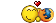

|
Click over the aminoacid you want to edit the color: |
Interpret this color table code |
Dear User,
All the functions of this program are accessible through the tabs at the top of
this page:
- Edit
- View
- Colors
- Translation Table
- Instructions (this tab)
- About
- Getting started
Copy your alignment and paste it on the "Edit" tab, then click on the "View" tab.
- Edit
You can edit your sequences on the "Edit" tab, just as though you were using a
simple text editor like NEdit, GEdit, Kate, Notepad, etc...
You can copy and paste sequences, insert or delete characters, move gap symbols,
change names, write text. Use your freedom.
- View
Here you can analyze your sequences that are colored with respect to the genetic
code and the amino acids represented there. If you want to edit the alignment,
you may change to the "Edit" tab and work on the plain text, and then click back
on the "View" tab to analyze the changes.
- Translation Tables
To select an alternative genetic code, you can click on the "Translation Table"
tab and choose one of the 17 genetic codes available in the selection box.
- Colors
On the "Colors" tab, you can also choose the colors that should be used to
represent each amino acid. There are some options on a selection bar: A Default
table with no biological meaning other than the highlighting of non-synonymous
substitutions, an implementation of the Taylor colors, described in his paper of
1997 (Taylor, W.R. 1997. Residual colours: A proposal for aminochromography.
PROTEIN ENG., Vol. 10, No. 7. pp. 743-746.), and an alternative version of
Taylor's table, with different foreground colors.
Alternatively, you can create your own color table. To change the background and
the foreground colors for each amino acid you must select the amino acid (or
stop) symbol to be edited, then click on the respective color bars for text or
background color to change the proportions of red, green and blue for the final
color. When you get the desired color combination for this amino acid, click on
"apply changes".
You can also save your personal selection of colors: Select the text within the
box (beginning with "color.table=") and save in a plain text file for future
use. When you want to use your own table later on, you just need to replace the
text from this box, copying the text you saved in there and clicking "interpret
this color table".
If you wish to have your custom color table shown in the selection box, you may
send it to dnatagger@gmail.com, so we may add it to the next upgrade of
DNATagger.
If you wish to use DNATagger off-line, you may save the page just as you would
for a regular web page, making sure you select the option to save the whole page
(instead of "only HTML").
DNATagger - Alignment Colorizer
Authors:
Daniel Monteiro Basso <daniel@basso.inf.br>
Nicole de Miranda Scherer <scherer@cs.uni-duesseldorf.de>
(You may also reach us through <dnatagger@gmail.com>)
This program is free software; you can redistribute it and/or modify
it under the terms of the GNU General Public License as published by
the Free Software Foundation; either version 3 of the License, or
(at your option) any later version.
This program is distributed in the hope that it will be useful,
but WITHOUT ANY WARRANTY; without even the implied warranty of
MERCHANTABILITY or FITNESS FOR A PARTICULAR PURPOSE. See the
GNU Library General Public License for more details.
http://www.gnu.org/licenses/
Cite:Scherer N.M. and Basso D.M. (2008) DNATagger, colors for codons. Genet.
Mol. Res. 7 (3): 853-860
We highly recommend the use of a standards compliant web browser, such as Mozilla Firefox. 
This site follows the W3C XHTML 1.0 Strict standard, you may validate by clicking the following icon: